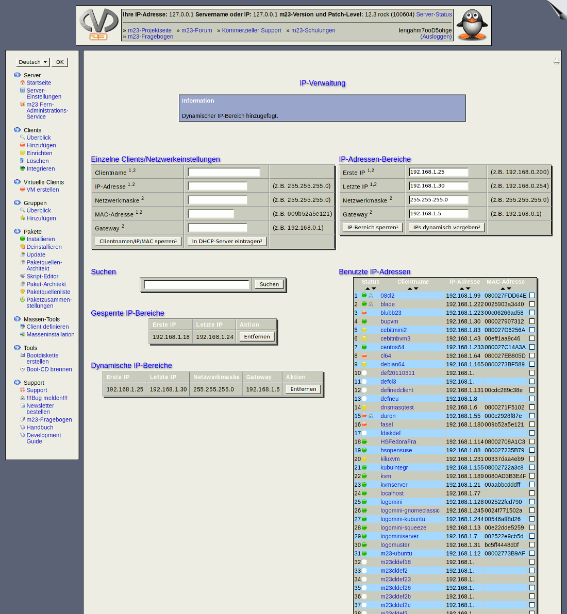

Nächste Seite:
Einzelne Clients/Netzwerkeinstellungen
Aufwärts:
Server
Vorherige Seite:
Wiederherstellung Ihres m23-Servers
Inhalt
IP-Verwaltung
In diesem Dialog können Sie Netzwerkeinstellungen für Rechner verwalten, die keine m23-Clients sind.

Unterabschnitte
Einzelne Clients/Netzwerkeinstellungen
IP-Adressen-Bereiche
Adrefllisten
dodger 2014-08-06